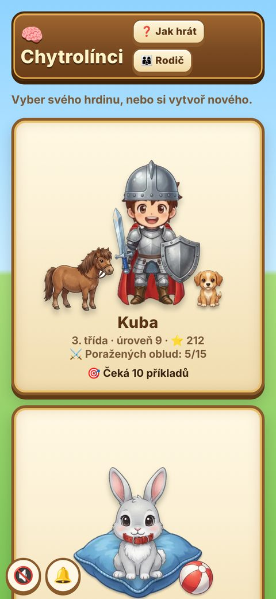
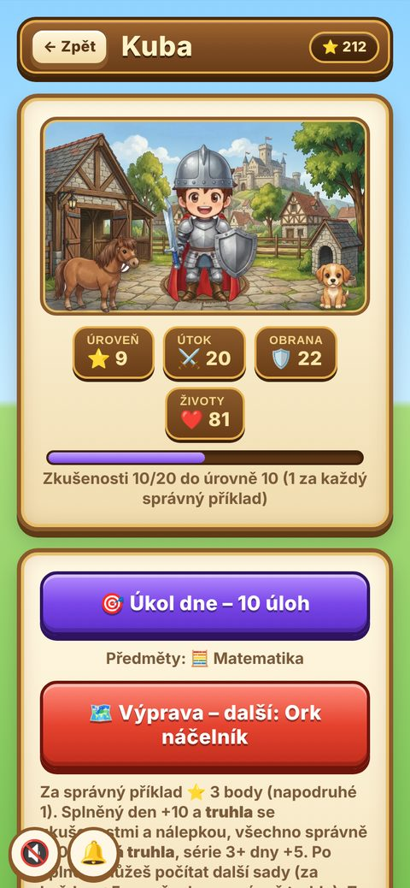
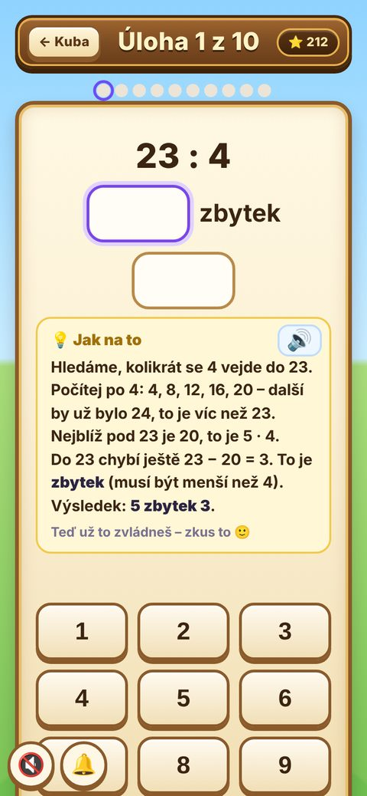
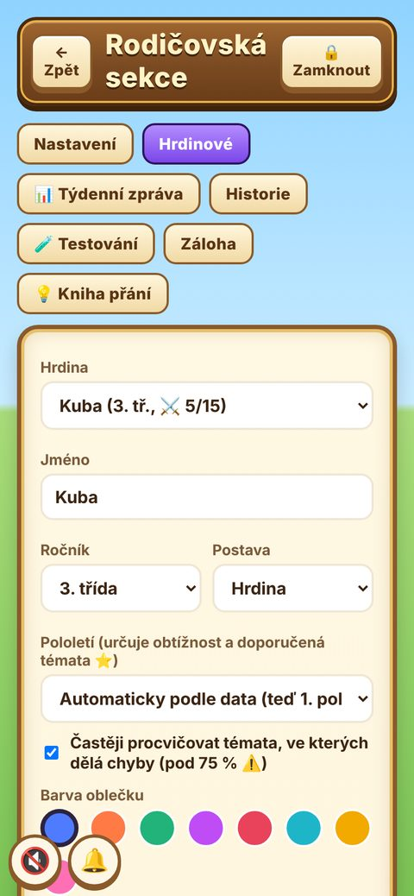
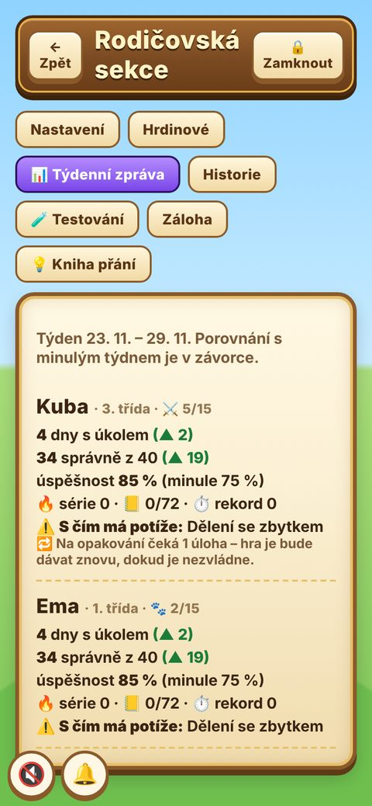
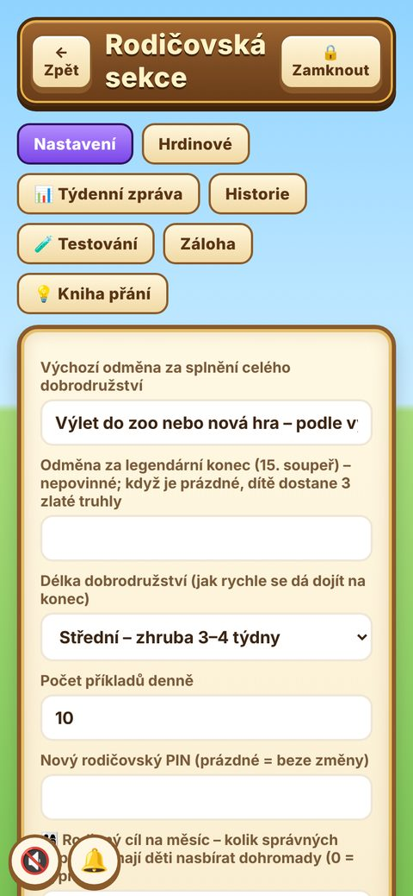

🧠 Co je to za hru
Chytrolínci jsou česká vzdělávací hra pro děti od předškoláků po 5. třídu. Dítě každý den splní krátký úkol dne – 10 úloh podle své třídy a pololetí. Za správné odpovědi sbírá body, zkušenosti a nálepky a jeho hrdina díky nim sílí.
- Matematika – sčítání, odčítání, násobilka, dělení se zbytkem, slovní úlohy, hodiny, peníze, jednotky, geometrie…
- Čeština – abeceda a slabiky, i/y, vyjmenovaná slova, párové souhlásky, slovní druhy, věty…
- Angličtina – slovíčka s obrázky a výslovností, čísla, barvy, fráze a jednoduché věty
- Prvouka a přírodověda – zvířata, rostliny, roční období, lidské tělo, bezpečí, Česko
Hra je bez reklam, bez chatu a bez registrace dítěte.
🚀 Jak začít
- Nainstalujte hru. Stáhněte si Chytrolínce z Google Play. Pokud jste byli pozváni do testování, použijte odkaz, který jste dostali. Hrát se dá i v prohlížeči na počítači nebo tabletu: romanbrzon-design.github.io/pocitaci-hrdinove.
- Založte rodinu. Při prvním spuštění klepněte na „✨ Jsme tu poprvé“. Hra vám ukáže rodinný kód (6 znaků). Zapište si ho.
- Další zařízení. Na druhém telefonu, tabletu nebo počítači zadejte rodinný kód a klepněte na „🔑 Připojit se k rodině“. Děti tam budou hrát se stejnými hrdiny a postupem.
- Vytvořte hrdinu. Každé dítě si vytvoří svého hrdinu: jméno, třída a dobrodružství – ⚔️ výprava za drakem, 🏡 vlastní domeček, nebo 🐾 zvířátko, které roste.
- Změňte PIN. V sekci Rodič (výchozí PIN 1234) si nastavte vlastní PIN, aby děti nemohly měnit nastavení.


🎯 Jak se hraje
Úkol dne
Na obrazovce hrdiny je fialové tlačítko „Úkol dne – 10 úloh“. Když dítě odpoví špatně, má ještě jeden pokus, pak se mu ukáže správná odpověď. Chyby se mu později samy vrátí k procvičení. Po splnění může pokračovat sadami navíc.
🤔 Nevím – vysvětli mi to
U matematiky a češtiny je pod úlohou tlačítko, které ukáže postup krok za krokem a přečte ho nahlas. Odpověď pak dítě zadá samo – učí se, ne jen hádá.
🔊 Předčítání
Pro děti, které ještě neumí číst. Zapíná se ikonou reproduktoru vlevo dole. Na telefonu první klepnutí odpověď přečte, druhé ji vybere. U předškoláků a prvňáků je zapnuté samo.
⚔️ Dobrodružství
Za body si dítě kupuje výbavu (meč, štít, nábytek, hračky pro zvířátko…) a musí si ji nasadit. Pak se utká se soupeři – v souboji platí: správná odpověď = úder, chyba = soupeř útočí. S každou úrovní se mění i prostředí.
🧩 Další zábava
- Album nálepek se zajímavostmi – nálepky skládají obrázek, za hotový obrázek je kvíz.
- Výzvy týdne a časovka (co nejvíc příkladů za minutu).
- Zvídavé minihry – pexeso, najdi rozdíly, „Kdo to zpívá?“ s hlasy ptáků, bludiště, skládačka, melodie, spoj tečky, omalovánky. Ve výchozím nastavení se otevřou až po splnění úkolu dne.

⭐ Body a odměny
| Správně napoprvé | ⭐ 3 body |
| Správně napodruhé | ⭐ 1 bod (stejně tak po vysvětlení) |
| Splněný úkol dne | ⭐ +10 a truhla |
| Všechno správně | ⭐ +10 navíc a zlatá truhla |
| Série 3 a více dní | ⭐ +5 každý den |
| Truhla | 💪 zkušenosti (posouvají hrdinu na další úroveň) a nálepka do alba |
Odměna od rodičů: po poražení 10. soupeře (u výpravy je to drak) hra ukáže odměnu, kterou jste nastavili v rodičovské sekci, například „Výlet do zoo“. Dítě vám obrazovku přijde ukázat. Pak pokračuje ještě 5 legendárními soupeři. Za posledního může dostat druhou odměnu, nebo 3 zlaté truhly.
👨👩👧 Rodičovská sekce
Otevřete ji tlačítkem „Rodič“ nahoře na úvodní obrazovce a zadejte PIN. Sekce má tyto záložky:
| Nastavení | Odměna za dokončení, délka dobrodružství, počet příkladů denně, nový PIN, rodinný cíl na měsíc, minihry až po úkolu, zvuky, týdenní zpráva e-mailem. Je tu také rodinný kód. |
| Hrdinové | U každého dítěte třída, pololetí (určuje obtížnost), předměty a jejich poměr, konkrétní témata (⭐ = probírá se teď ve škole, % = úspěšnost), tajný kód hrdiny, přidání bodů za domácí úkoly, nová výprava. |
| 📊 Týdenní zpráva | Kolik dní dítě hrálo, kolik odpovědí mělo správně, srovnání s minulým týdnem a s čím má potíže. |
| Historie | Výsledky po dnech a témata, ve kterých dítě chybovalo. |
| 🧪 Testování | Vyzkoušejte si hru sami. Testovací hrdina se dětem nezobrazuje a neovlivní výsledky. |
| Záloha | Postup se ukládá automaticky. Kdyby dítě o postup přišlo, obnovíte ho tady ze záloh na serveru. |
| 💡 Kniha přání | Napište nám nápad, chybějící učivo nebo chybu v otázce. Přání přijde autorovi hry e-mailem. |



✅ Tipy pro rodiče
- Stačí 10–15 minut denně. Pravidelnost je důležitější než délka – za hraní několik dní po sobě jsou bonusy.
- Na začátku školního roku nechte pololetí na „Automaticky podle data“. Když je dítěti učivo moc lehké nebo těžké, změňte třídu nebo pololetí.
- Zapněte si týdenní zprávu e-mailem (Nastavení). Každý týden uvidíte, s čím dítě bojuje, a můžete to s ním probrat.
- Tlačítkem „Připsat body“ u hrdiny můžete dítě odměnit i za věci mimo hru – úklid, četbu, domácí úkol.
- Mladší děti si nechte hrát s předčítáním a sedněte si k nim první den.
❓ Časté otázky
Dítě hraje na dvou zařízeních. Ztratí postup?
Ne, pokud jsou obě zařízení připojená ke stejnému rodinnému kódu. Postup se ukládá na server a stáhne se na všechna zařízení.
Máme nový telefon.
Nainstalujte hru a zadejte rodinný kód (najdete ho v rodičovské sekci → Nastavení na starém zařízení).
Hrdina najednou přišel o postup.
Rodič → Záloha → „☁️ Zálohy na serveru“, vyberte hrdinu a klepněte na Obnovit u posledního dobrého stavu.
V otázce je chyba nebo chybí učivo.
Napište nám přes 💡 Knihu přání v rodičovské sekci. Každé přání si přečteme.
Jaké údaje hra ukládá?
Jen přezdívku dítěte, třídu a herní postup. E-mail rodiče jen tehdy, když ho sami zadáte (pro týdenní zprávu nebo odpověď na přání). Podrobnosti jsou v zásadách ochrany soukromí.
🔧 Proč se aplikace spouští „v Chromu“
Pro zvídavé – hrát se dá i bez toho.
Při spuštění se dole na chvíli ukáže „Spuštěno v Chromu“. Aplikace z Google Play totiž otevírá hru z webu ve vlastním okně a vykresluje ji pomocí Chromu. Takhle funguje řada aplikací na Google Play a Google tento způsob přímo podporuje.
Výhody
- Opravy se projeví hned. Když se ve hře něco opraví nebo přidá, mají to všichni do pár minut. U běžné aplikace by každá změna čekala na novou verzi a kontrolu Googlu, často i několik dní.
- Jedna hra pro všechna zařízení. Stejná hra běží na telefonu, tabletu, počítači i v prohlížeči a postup se mezi nimi přenáší.
- Malá aplikace. Stahuje se jen pár megabajtů.
- Kvalitní předčítání. Hra používá české hlasy, které jsou v Androidu.
Co je dobré vědět
- Potřebuje Chrome (nebo jiný prohlížeč, který tento režim umí). Chrome je prakticky na každém Androidu.
- Data jsou uložená v Chromu. Když v telefonu vymažete data Chromu, hra na něm zapomene hrdiny. Postup se ale díky rodinnému kódu stáhne zpátky ze serveru, takže se nic neztratí.
- Pokud jste dřív hráli hru v Chromu na stejném telefonu, aplikace po instalaci rovnou ukáže vaše hrdiny – sdílí s Chromem stejná data.
- Úplně poprvé potřebuje internet. Potom hra funguje i bez připojení, jen obrázky, které ještě nebyly zobrazené, se načtou až s internetem.
✉️ Kontakt
Hru vytváří Roman Brzoň. Napište na chytrolinci@email.cz nebo přes Knihu přání ve hře.